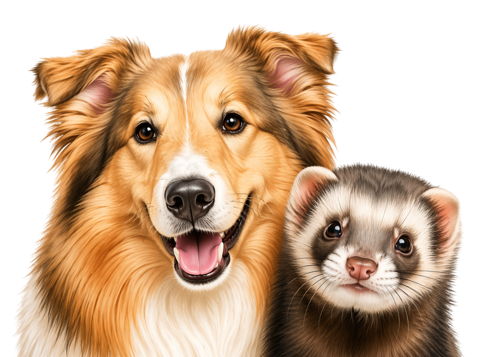

Сообщество
для владельцев
питомцев
Делитесь историями, получайте советы по уходу.
Находите новых друзей для ваших любимцев.

Потеряшки
Здесь появляются объявления о потерянных питомцах.
Что нас отличает
-
📖
История питомцев
Делитесь трогательными историями своих любимцев с нашим сообществом
-
💡
Советы по уходу
Экспертные рекомендации ветеринаров и опытных владельцев
-
🤝
Найди друзей
Знакомьтесь с владельцами питомцев из вашего города
-
🐾
Активное сообщество
Общайтесь с другими владельцами, задавайте вопросы и находите поддержку в заботе о питомцах
Свежие публикации
-
Уход
Как ухаживать за шерстью собаки зимой
Зимой шерсть собаки требует более внимательного ухода, потому что на неё влияют холодный воздух, снег, влага и реагенты на дорогах. После каждой прогулки важно осматривать лапы, живот и шерсть, чтобы вовремя убрать грязь, снег и мелкий мусор. Длинношёрстных собак желательно регулярно расчёсывать, так как влажная шерсть быстрее спутывается и образует колтуны. После мытья или прогулки под снегом питомца нужно хорошо просушить полотенцем, особенно если шерсть густая. Не стоит слишком часто купать собаку зимой, потому что это может пересушить кожу и нарушить естественную защиту шерсти. Для прогулок в сильный мороз можно использовать одежду, если питомец плохо переносит холод. Также важно следить за состоянием подушечек лап и при необходимости наносить защитный воск или крем. Такой уход помогает собаке чувствовать себя комфортно даже в холодное время года.
-
Здоровье
Прививки для кошек: полный гид
Вакцинация помогает защитить кошку от опасных инфекционных заболеваний, которые могут тяжело протекать даже у домашних животных. Многие владельцы считают, что если кошка не выходит на улицу, то прививки ей не нужны, но инфекцию можно занести домой на обуви, одежде или руках. Обычно первые прививки делают котёнку в раннем возрасте, а затем проводят ревакцинацию по графику, который подбирает ветеринар. Перед вакцинацией важно убедиться, что питомец здоров, активен и не имеет признаков болезни. Также обычно заранее проводят обработку от паразитов, чтобы организм лучше перенёс прививку. После вакцинации кошку желательно несколько дней не подвергать стрессу, не купать и не перевозить без необходимости. Владелец должен наблюдать за состоянием питомца и при необычной реакции обратиться к специалисту. Регулярная вакцинация особенно важна, если кошка бывает на даче, контактирует с другими животными или участвует в выставках.
-
Питание
Как выбрать корм для щенка
Выбор корма для щенка влияет на его рост, развитие костей, состояние шерсти и общее самочувствие. В первые месяцы жизни организму требуется больше энергии, белка, витаминов и минералов, поэтому корм должен соответствовать возрасту питомца. Нельзя ориентироваться только на красивую упаковку или рекламу, важно внимательно смотреть состав и назначение продукта. Для щенков мелких, средних и крупных пород потребности могут отличаться, потому что скорость роста и нагрузка на суставы у них разная. Новый корм лучше вводить постепенно, смешивая его со старым питанием, чтобы избежать проблем с пищеварением. Важно следить за реакцией питомца: состоянием стула, активностью, аппетитом и внешним видом шерсти. Если щенок отказывается от еды или появляются неприятные симптомы, стоит обсудить рацион с ветеринаром. Также нельзя перекармливать питомца, даже если он просит добавку, потому что лишний вес в раннем возрасте может навредить здоровью. Правильно подобранное питание помогает щенку расти активным, крепким и здоровым.
-
Поведение
Почему питомец боится громких звуков
Многие животные пугаются громких звуков, потому что воспринимают их резче и чувствительнее, чем человек. Салюты, гроза, строительный шум, хлопки и громкая музыка могут вызывать у питомца тревогу, желание спрятаться или убежать. В такие моменты важно не ругать животное и не заставлять его насильно выходить из укрытия. Лучше заранее подготовить спокойное место, где питомец сможет почувствовать себя в безопасности. Можно закрыть окна, приглушить свет и включить негромкий привычный звук, чтобы снизить резкость внешнего шума. Хозяину стоит вести себя спокойно, потому что животные хорошо чувствуют напряжение человека. Если страх появляется регулярно, питомца можно постепенно приучать к звукам на низкой громкости, поощряя спокойное поведение. В тяжёлых случаях лучше обратиться к ветеринару или специалисту по поведению животных. Терпение и мягкий подход помогают питомцу постепенно справляться со стрессом.
-
Игры
Лучшие игрушки для активных кошек
Активным кошкам важно давать возможность играть каждый день, потому что игра заменяет им охоту, помогает тратить энергию и снижает стресс. Если питомцу скучно, он может начать портить мебель, бегать по ночам или требовать постоянного внимания. Хорошо подходят игрушки-дразнилки, мячики, тоннели, интерактивные кормушки и предметы, которые можно катать или ловить. Игрушки лучше менять местами и периодически убирать часть из них, чтобы кошка не теряла интерес. Во время игры важно не использовать руки как игрушку, иначе питомец может привыкнуть кусаться и царапаться. Для кошек с сильным охотничьим инстинктом полезны игры, где нужно выслеживать, догонять и ловить предмет. После активной игры можно дать небольшое лакомство, чтобы завершить «охотничий» сценарий. Также важно учитывать возраст и характер питомца: котятам нужны более частые игры, а взрослым кошкам могут подойти спокойные, но регулярные занятия. Правильно подобранные игрушки делают жизнь кошки дома более насыщенной и здоровой.
-
Дрессировка
Первые команды для молодой собаки
Обучение молодой собаки лучше начинать с простых команд, которые помогают наладить контакт между питомцем и хозяином. Команды «сидеть», «ко мне», «рядом», «нельзя» и «место» пригодятся не только дома, но и на прогулке. Занятия должны быть короткими, потому что щенок быстро устаёт и теряет внимание. Лучше тренироваться несколько раз в день по несколько минут, чем проводить одно длинное занятие. Важно использовать спокойный голос, понятные жесты и поощрение за правильное действие. Лакомство, похвала или игра помогают собаке понять, какое поведение от неё ожидают. Нельзя кричать на питомца или наказывать его за ошибку, потому что это может вызвать страх и недоверие. Если команда не получается, лучше упростить задачу и повторить её позже. Постепенность, регулярность и доброжелательное отношение помогают собаке быстрее учиться и увереннее вести себя рядом с человеком.